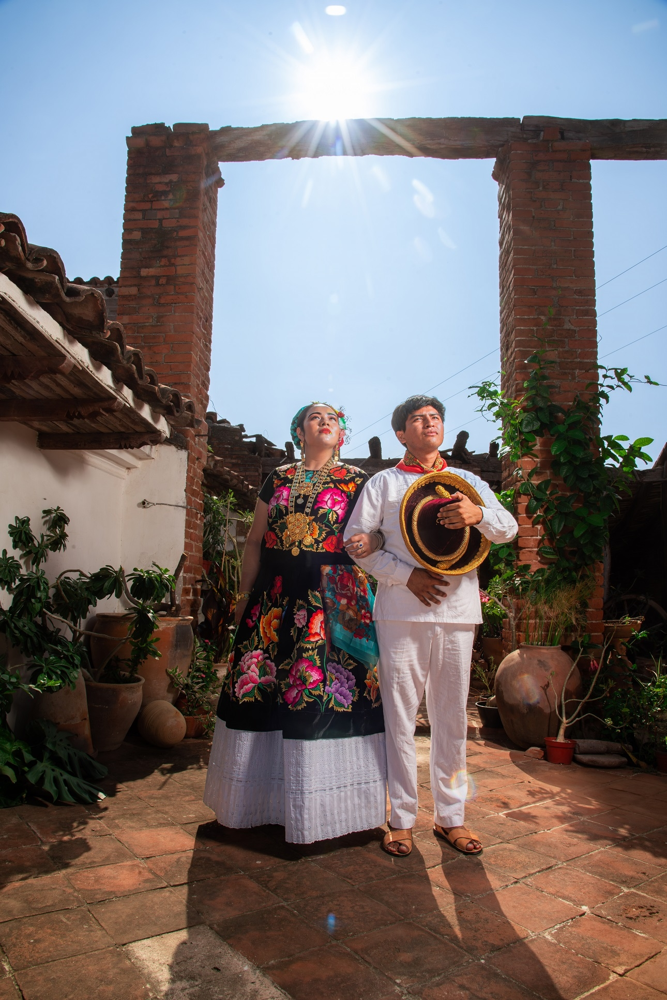

El universo visual del bordado juchiteco
Mirar de cerca una blusa bordada de Juchitán de Zaragoza es asomarse a un universo completo: un jardín tropical en miniatura donde cada flor, cada ave y cada motivo geométrico tiene nombre, historia y significado. Los diseños de bordado del Istmo de Tehuantepec no se inventan al azar — son el resultado de siglos de observación de la naturaleza, de la cosmovisión zapoteca y de un sentido estético tan refinado que ha fascinado a diseñadores de moda de todo el mundo.
En este artículo exploramos los elementos visuales más representativos del bordado juchiteco: las flores que lo protagonizan, los colores que lo definen, la fauna que lo habita y los motivos geométricos que lo estructuran. Una guía para entender — y apreciar — el lenguaje visual más rico del textil mexicano.
"El bordado de Juchitán es una enciclopedia de la vida en el Istmo, escrita con hilo sobre tela."
Las flores: el corazón de los diseños bordados de Juchitán
Si hubiera que elegir un solo elemento que define el bordado istmeño, ese sería sin duda la flor. Las flores del Istmo de Tehuantepec son exuberantes, de pétalos grandes y colores saturados, y las bordadoras juchitecas las han inmortalizado sobre la tela con una fidelidad casi botánica. Estas son las flores más frecuentes en los diseños:
- Hibisco (Jamaica): La flor más emblemática del bordado juchiteco. Sus pétalos amplios y su forma estrellada la hacen perfecta para el punto de satín. Aparece en tonos rojo carmín, rosa magenta y blanco cremoso, siempre con un centro detallado en hilo dorado o amarillo.
- Bugambilia: Las flores triangulares en racimo de la bugambilia se borda en degradados de magenta, violeta y coral. Son uno de los motivos más reconocibles del bordado istmeño y uno de los favoritos para blusas de gala.
- Cempasúchil (Flor de Muerto): El amarillo intenso y el naranja solar del cempasúchil aportan luminosidad a las composiciones. Se usa especialmente en diseños festivos y en prendas de la temporada de Día de Muertos.
- Flor de Mayo (Plumeria): De cinco pétalos blancos con centro amarillo, la plumeria aporta delicadeza y elegancia. Suele combinarse con hibiscos y hojas verdes para crear composiciones equilibradas.
- Rosa y margarita: Influencia colonial integrada al vocabulario visual zapoteca. Las rosas se bordan en rojo, rosa y blanco; las margaritas en blanco y amarillo. Aportan volumen y contraste a los diseños florales.
- Lirio y tulipán: Flores de origen europeo que las bordadoras juchitecas adoptaron y resignificaron con su propia paleta y estilo. Aparecen en diseños más formales y en prendas de festividades religiosas.
Los colores del bordado de Juchitán: una paleta que no teme al exceso
El bordado juchiteco es, ante todo, una celebración del color. La paleta cromática del Istmo rechaza la timidez: los colores se usan en su máxima saturación, se combinan con audacia y crean contrastes que, lejos de agredirse, se potencian mutuamente. Así se compone la paleta típica:
- Rojo carmín y rojo escarlata: El color dominante del bordado istmeño. Evoca la sangre, la pasión, la vida. Protagoniza flores de hibisco, rosas y diseños de gala sobre fondo negro de terciopelo.
- Amarillo solar y dorado: El color del maíz, del sol zapoteca y de la flor de cempasúchil. Aporta luminosidad a las composiciones y actúa como acento brillante en centros de flores y estambres.
- Verde jade y verde selva: Los tonos de la vegetación exuberante del Istmo. Son los colores de las hojas, los tallos y los fondos que enmarcan las flores. Van desde el verde esmeralda hasta el verde olivo oscuro.
- Magenta y rosa intenso: Los colores de la bugambilia y la buganvilia. Son los más festivos y contemporáneos de la paleta, especialmente populares en prendas para mujeres jóvenes.
- Azul rey y azul cobalto: Asociados al mar del Golfo de Tehuantepec y al cielo del Istmo. Aparecen tanto en motivos de fauna marina como en fondos de prendas formales.
- Naranja y terracota: Los colores de la tierra istmeña y del crepúsculo sobre el Pacífico. Aportan calidez a las composiciones y funcionan como transición entre rojos y amarillos.
- Blanco y crema: Usados para flores delicadas como plumerias y margaritas, o como fondo de blusas de manta. Crean un contraste elegante con los colores vibrantes del bordado.
- Negro (fondo): El terciopelo negro no es un color de bordado, sino el lienzo que hace brillar todos los demás. Es el fondo más usado para prendas de gala porque intensifica el contraste de los hilos de colores.
"En Juchitán, el color no decora la vida: es la vida misma puesta sobre la tela."
La fauna en el bordado istmeño: la naturaleza que habita la tela
El Istmo de Tehuantepec es una de las regiones con mayor biodiversidad de México, y esa riqueza natural se refleja fielmente en los diseños bordados. Los animales del Istmo no son adornos casuales sino figuras cargadas de simbolismo cultural:
- Iguana verde: El animal más representativo de Juchitán. Símbolo de la tierra, la permanencia y la sabiduría. Se borda con escamas detalladas en verde jade sobre fondo oscuro, generalmente en prendas de uso cotidiano y souvenirs bordados.
- Mariposa: Símbolo de transformación y libertad. Sus alas simétricas son perfectas para el bordado de satín con gradientes de color. Aparece frecuentemente en blusas de celebración y prendas para jóvenes.
- Colibrí: Ave sagrada en varias culturas mesoamericanas. En el bordado juchiteco aparece libando flores, con plumas iridiscentes reproducidas en hilos metálicos verde esmeralda y azul turquesa.
- Quetzal: Ave de la libertad y el orgullo indígena. Sus largas plumas verdes se prestan a composiciones elongadas y elegantes, presentes en prendas de gala y piezas de colección.
- Pez y tortuga marina: Motivos de la fauna del Golfo de Tehuantepec. Evocanen el bordado la relación ancestral del pueblo istmeño con el mar. Frecuentes en diseños de prendas para hombres y en artesanías bordadas.
- Pájaro tropical (loro y guacamaya): Aves de colores brillantes que añaden dinamismo y movimiento a las composiciones. Se bordan con gran detalle en las plumas, usando degradados de rojo, verde y azul.
Motivos geométricos: el lenguaje ancestral zapoteca
Junto a los diseños florales y de fauna, el bordado juchiteco incorpora motivos geométricos de origen zapoteca que funcionan como marcos, cenefas y elementos estructuradores de la composición. Estos patrones tienen un origen prehispánico y muchos de ellos fueron tomados de la arquitectura de Monte Albán y de los códices zapotecas:
- Grecas y espirales: Líneas quebradas en ángulo recto que crean patrones de movimiento continuo. Son los elementos geométricos más comunes en las cenefas de enaguas y en los bordes de las blusas.
- Rombos y triángulos: Formas geométricas básicas que se combinan para crear patrones de relleno entre los motivos florales. Suelen ejecutarse en punto de cadeneta en colores contrastantes.
- Cruces y estrellas: Elementos de probable influencia colonial integrados al repertorio geométrico. Aparecen en prendas de festividades religiosas y en diseños de carácter ceremonial.
- Volutas y olas: Curvas continuas que simulan el movimiento del agua y del viento. Son frecuentes en diseños de inspiración marina y en prendas de comunidades pesqueras del Istmo.
Cómo se compone un diseño de bordado juchiteco
Los diseños de bordado de Juchitán no son composiciones improvisadas. Responden a una lógica visual clara que las bordadoras aprenden de generación en generación:
- Motivo central dominante: Generalmente una flor grande (hibisco o bugambilia) que ocupa el espacio central de la prenda y organiza todo el diseño a su alrededor.
- Elementos secundarios de relleno: Flores más pequeñas, hojas, capullos y botones florales que llenan los espacios entre el motivo central y los bordes.
- Cenefa de borde: Un motivo continuo — geométrico o floral — que encuadra la composición en los bordes de la prenda. Es la "firma" que define el estilo de cada bordadora.
- Simetría flexible: Los diseños son aproximadamente simétricos, pero las artesanas se permiten variaciones que aportan naturalidad y movimiento, evitando la rigidez de la simetría perfecta.
- Jerarquía cromática: El color más saturado se reserva para el motivo central; los tonos más suaves enmarcan y dan profundidad a la composición total.
Del bordado artesanal al bordado digital: preservando el diseño
En Bortex Bordados Juchitán, trabajamos diariamente con todos estos elementos visuales del bordado istmeño. Nuestro proceso de ponchado (digitalización) nos permite capturar con fidelidad la geometría, los colores y la escala de cada motivo tradicional para reproducirlo en bordado digital de alta precisión.
Esto significa que puedes llevar un hibisco juchiteco bordinado sobre el fondo negro de una gorra, una mariposa istmeña en el pecho de una playera corporativa, o una cenefa zapoteca enmarcando el logo de tu empresa — sin perder la esencia del diseño original.
Si tienes un diseño propio inspirado en los motivos de Juchitán, o quieres usar alguno de nuestros patrones de archivo, contáctanos. Nuestro equipo de diseño te asesorará para lograr el mejor resultado en cualquier prenda y material.
¿Quieres bordar un diseño inspirado en la cultura de Juchitán?
Solicitar cotización gratis